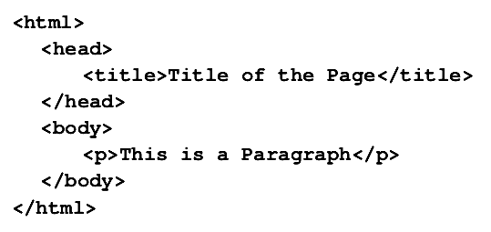
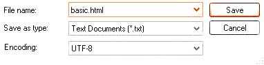
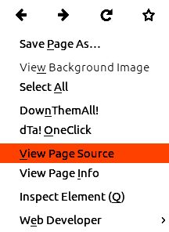

هرآنچه باید درباره ی
HTML5
به عنوان رسانه وب بدانید
ایمان باقری
دانشگاه شیخ بهایی
Iman.Bagheri@ubuntu.com

آشنایی با مفاهیم
اینترنت
شبکه ای از کامپیوتر ها که یکسری اطلاعات را بین یکدیگر منتقل می کنند.
یکی از راه های انتقال اطلاعات در اینترنت استفاده از شبکه جهانی وب
(www)
است
.
سرویس دهنده
کامپیوتر هایی که منابع اطلاعاتی را دارند و وظیفه آنها سرویس دهی به سایر کامپیوتر ها است
.
سرویس گیرنده
کامپیوتر هایی که منابع اطلاعاتی را از سرویس دهنده میگیرند
.
www چگونه کار میکند؟
- اطلاعات وب در جایی بنام web page در کامپیوتر سرویس دهنده قرار دارند .
-
کامپیوترها برای دیدن صفحات وب از استاندارد ارتباطی
http) hyper text transfer protocol استفاده میکنند . - کامپیوتر سرویس گیرنده اطلاعات وب را از طریق مرورگر وب (internet Browser) می بیند .
- مرورگرها دستورالعمل های وب که همان تگ های Html هستند نمایش میدهند .
html چیست ؟
html
یک
زبان نشانه گذاری فرامتنی
است
.
نه یک زبان برنامه نویسی
!!!
-
که برای
- تدوین قالب
- طراحی صفحه های وب
- و ارسال منابع اطلاعاتی در پهنه وسیعی از مخاطبان و کامپیوتر ها قابل فهم میباشد .
html چگونه رسانه ای است ؟
-
رسانه به اشتراک گذاری منابع اطلاعاتی
(از طریق متن ، جدول ، لیست و...) -
رسانه تبادل اطلاعات با کامپیوتر های راه دور
(به جهت جستجو ، ذخیره سازی و مرتب سازی) - رسانه ای شامل تصاویر ، کلیپ های صوتی و ویدیویی
- رسانه ی برنامه های کاربردی ، اجرایی و تعاملی
تاریخچه html
درسال
۱۹۹۲
توسط فیزیکدانی به نام
Tim Berners-Lee
همراه با گسترش وب شکوفا شد و توانست به کمک مرورگر
mosaic
به اجرا برسد
.
در نوامبر
۱۹۹۵
نسخه 2 آن گسترش یافت و بلافاصله در همان سال نسخه 3 منتشر شد ولی استقبالی از آن نشد
.
درسال ۱۹۹۶ انجمن w3c شروع بر فعالیت این زبان کرد که حاصل کار آنها انتشار html 3.02 بود .
این نسخه هماهنگی بیشتری با مرورگرهای مختلف داشت .
html 4
در ۱۸ دسامبر ۱۹۹۷ کنسرسیوم w3c آن را به رسمیت شناخت .
html4
بدلیل ویژگی ها و تفاوت هایی که نسبت به نسخه های قبلی داشت توانست به محبوبیت و مقبولیت برسد
.
که مهم ترین آنها عبارت است از :
- پشتیبانی از انواع زبان ها و کاراکتر ها
- استفاده از CSS
- گنجاندن زبان های اسکریپتی
- گنجاندن جداول
Xhtml
html4
زبان بسیار قوی ای بود
اما در آن توجهی به
دستگاه های کوچک
با قدرت و حافظه کم نشده بود
.
به همین منظور
w3c
در سال
۲۰۰۰
اقدام به معرفی
xhtml
کرد
.
xhtml
نسخه بهینه شده از html4 با قواعد یکه بود که کدهای خود را در فایلی با پسوند xml ذخیره میکرد
.
به عنوان مثال دستورات در xhtml برخلاف html باید تماماً با حروف کوچک نوشته میشدند (Case Sensitive)
html5 از راه رسید!
html5
آخرین نسخه از زبان اصلی world wide web است
که در سال ۲۰۰۸ توسط گروهی از شرکت های بزرگ از جمله
Google , IBM , Aol , Mozilla , Opera
و..
منتشر شد
.
مشخصه های جدید html5 بیشتر بر روی web app ها و معرفی صدا و تصویر بعنوان رسانه سطح اول در وب متمرکز شده است
از دیگر قابلیت های جدید در html5 ایجاد عناصر صفحه مانند
سربرگ , پاورقی و نوارکناری
و ...
میباشد
.
در این نسخه تگ ها و صفات جدیدی هم اضافه شده که به آنها اشاره خواهیم کرد
ساختار تگ ها
تگ ها از سه قسمت تشکیل میشوند
- یک علامت کوچکتر (<)
- نام تگ
- یک علامت بزرگتر (>)
و معمولاً به شکل جفتی بکار میروند و ساختار جدیدی به اسم عنصر بوجود می آورند
ساختار اصلی وب
در داخل تگ html دو نوع عنصر اصلی وجو دارد :
مثال

ایجاد و ذخیره فایل های html
برای ساخت صفحات وب نیاز به ابزار خاصی نیست و میتوان از هر برنامه واژه پردازی استفاده نمود هر چند نرم افزار های ویژه و قدرتمندی همچون blue fish برای این کار وجود دارند .
کافی است دستورات را در برنامه واژه پرداز تایپ کرده و به فرمت html. ذخیره کنید .

مشاهده کد منبع

یکی از مزیت های فایل های html آن است که به راحتی میتوان کدهای منبعشان را در مرورگر مشاهده کرد .
بدین منظور اگر مرورگر فایرفاکس دارید درجایی از صفحه راست کلیک کرده و گزینه view page source را بزنید .
آشنایی با تگ ها
- ≺b≻ متن داخل این تگ به صورت ضخیم نمایش داده میشود .
- ≺i≻ از این تگ برای مورب کردن نوشته استفاده میشود .
- ≺u≻ محتوای خود را به صورت زیر خط نشان میدهد .
- ≺big≻ محتوایش را بزرگتر از متون اطرافش نشان میدهد .
- ≺small≻ محتوایش را کوچکتر از متون اطرافش نشان میدهد
- ≺del≻ نشان میدهد نویسنده متن را حذف کرده .
- ≺ins≻ نشان میدهد که متن به تازگی اضافه شده .
آشنایی با تگ ها
آشنایی با تگ ها
- ≺a≻ برای ایجاد لینک ها استفاده میشود
- ≺/ img≻ برای قراردادن عکس از این تگ تهی استفاده میکنیم
- ≺ol≻ برای ساختن لیست مرتب از این تگ استفاده میکنیم
- ≺ul≻ برای ساختن لیست نامرتب از این تگ استفاده میکنیم
- ≺li≻ عنصر مشخخص کردن ایتم های لیست مرتب و نامرتب است
- ≺table≻ ساختن جداول
- ≺input≻ برای ایجاد انواع و اقسام عناصر فرم استفاده میشود
عناصر چندرسانهای در HTML5
هرآنچه در یک صفحه وب قابل دیدن یا شنیدن باشد یک عنصر چندرسانه ای است
یک مرورگرفقط توانایی نشان دادن متن و تعداد محدودی از فرمت های تصاویر را دارد
اما انواع مختلفی از فایل ها در اینترنت وجود دارد مثل فایل های PDF و انیمیشن های Flash و ...
درنتیجه مرورگر نیاز به برنامه های پخش کننده دارد
که یا بصورت مجزا از برنامه های پخش کننده سیستم استفاده میکند یا برای ان کار plugin وجود دارد
عناصر چندرسانه ای در HTML5
افزودن فایل های چندرسانه ای به صفحات وب روش های زیادی دارد اما ساده ترین ان استفاده از تگ
≺embed≻
است
html5
روش ها و تگ های جدیدی فراهم کرده است از جمله تگ
≺video≻
و
≺audio≻
که مزیت استفاده از این تگ ها به جای تگ های
≺object≻
و
≺embed≻
این است که مرورگرها قادرند اینگونه فایل ها را بدون نیازبه پلاگین اجرا کنند
سخن پایانی
html
رسانه ای بسیار پرکاربرد است که میتواند به ما در
کمک نماید
در آینده نزدیک شاهد انتشار
Html6
خواهیم بود
این نسخه بیشتر بروی تبلت ها و گوشی های هوشمند متمرکز شده است و دیگر بهانه ای برای یادنگرفتنش نیست